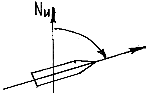
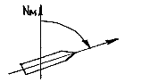
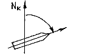
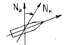
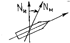

| 41. Девиацията на корабния магнитен компас се изчислява: |
|
ежегодно при изпитанията на кораба след постройка ежедневно преди тръгване на кораба на рейс |
| 42. Общата поправка на корабния магнитен компас ( ΔΚ ) е равна: |
|
ΔК = δ - d ΔК = d - δ ΔК = (± d ) + ( ± δ ) Δ К = (d + δ)/2 |
| 43. Общата поправка на корабния магнитен компас е равна на: |
|
разликата между истинския курс и истинския пеленг разликата между девиация и магнитното склонение средното аритметично на алгебричния сбор от девиацията и магнитното склонение алгебричния сбор от девиацията и магнитното склонение |
| 44. Корабния магнитен компас дава показанията за: |
|
компасния курс магнитния курс истинския курс ъгъла между курса на кораба и екватора |
| 45. Истинския курс (ИК) е равен: |
|
ИК = КК + ( ± Δ Κ ) ИК = КК – ( ± ΔΚ ) ИК = КЪ + Δ Κ ИК = КЪ ± ΔК |
| 46. Този ъгъл наричаме:  |
|
компасен курс магнитен курс истински курс корабен курс |
| 47. Този ъгъл наричаме:  |
|
компасен курс магнитен курс истински курс магнитно склонение |
| 48. Този ъгъл наричаме:  |
|
компасен курс магнитен курс магнитно склонение истински курс |
| 49. Този ъгъл наричаме:  |
|
магнитно склонение обща поправка на компаса ΔК девиация на магнитния компас истински курс |
| 50. Този ъгъл наричаме:  |
|
обща поправка на магнитния компас девиация на магнитния компас магнитно склонение магнитен курс |